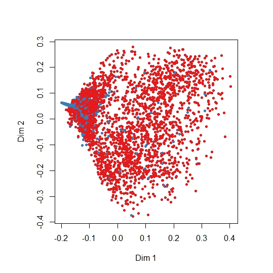

Programming Projects Implemented
In this part, you can find all the programming projects I implemented during my curriculum just as those I made for fun or for the simple reason that I wanted to increase my programming skills. For the moment, you can only see four of them but more are coming! The code is on-demand only! Do not hesitate to contact me if you have any questions about them~~!
Thread Concurrency Programming (Python) |
Thread Concurrency Programming using Python
During my studies at the IIT, I had to implement and show conccurent programming using threads on Python wrote a paper on the possible Kernel organizations for an operating system. Among them, I particularly described the monolithic and the microkernel wrote a quick overview of some exokernels and described the major operating systems now available. I compared these different solutions and discussed the trade-offs made in each of them.
VHDL and Verilog Adder Code |
VHDL and Verilog Adder Code
Different types of Adder implementations and performance comparisons using VHDL and Verilog for VLSI Design class at IIT.
 |
Network Simulation |
Network Simulation using Tp/Tcl/OTcl, Awk, Perl and the Network Simulation 2 Software
Network Simulation of the Internet and Tranport Protocols IP and TCP/UDP. Comparisons, study and simulation of the different protocol behaviors.
|  |
R Programs for Data Mining |
Data Mining Projects Using the R Software for Data Analysis
In this document, I describe the opportunities represented by Big Data solutions for Internet Service Providers and also present a fictive end-to-end process based on a software located in smartphones and tablets collecting data generated by the user, sending them to the Cloud where these data can then be processed by Hadoop, using MapReduce and Data Mining techniques, extracting relevant and meaningful information to provide personalized services to customers.
 |
Python and Java Programs using for AWS |
Python/Java Programs using for Amazon Web Services
During my studies at the Illinois Institute of Technology, I made an analysis project of the potential correlations between the American people mood and its implication on a political point of view. To perform my analyses, I had to preprocess my data (consisting of more than 60 million tweets), build my own classifiers, mappers and reducers using both Python and Java, each use depending on my knowledge of the languages.